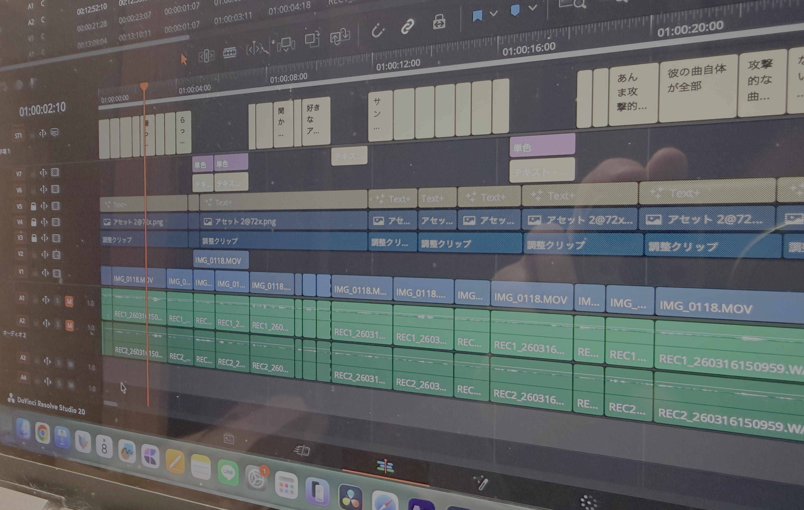
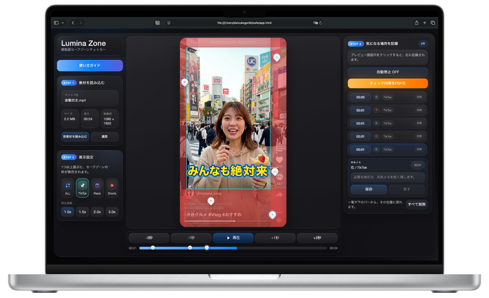

セーフゾーンチェック
各SNSの表示領域に合わせて、見切れやUIの重なりを投稿前に確認できます。
完成画面では見えていても、投稿画面では隠れることがあります。
動画制作って、思っている以上に神経を使う作業です。
編集する側は細部を詰め、チェックする側は品質とミスの両方を見なければいけない。
どちらも丁寧にやっているからこそ、最後のチェックで見落としが起きてしまうことがあります。

Common Problems
地味なミスこそ、クライアントの信頼残高に直結します
Capabilities
Lumina Zoneの4つの機能
Lumina Zoneは、見切れチェックだけで終わりません。気になる箇所にピンを打ち、メモを残し、PDFでそのまま共有できます。

各SNSの表示領域に合わせて、見切れやUIの重なりを投稿前に確認できます。
気になる位置やタイミングにピンを打って、修正ポイントを残せます。
テロップ以外の修正意図も、その場でメモして共有できます。
チェック内容をPDFにまとめて、そのまま編集者やチームへ共有できます。
Report
気になる場所にはメモも残せます。チェック結果はPDFにまとめて、そのまま確認先へ渡せます。
Timing
編集後に1度確認するだけで、投稿後の見切れや手戻りを減らせます。
1 編集完了
2 投稿前
3 投稿後
投稿前に止められるかどうかで、結果は変わります。
Voices
SNS運用ディレクター（経験4年）
複数案件を回していると、どうしても最後の確認が甘くなることがありました。
編集が終わって、キャプションも考えて、あとは投稿するだけ。そのタイミングで「もう大丈夫だろう」と進めてしまい、あとからテロップの見切れに気づくことも正直ありました。
このツールを使うようになってからは、投稿前に一度通すだけで全体を確認できるので、事故が減り、安心して公開できるようになりました。
佐藤 みか氏
動画編集者（経験3年）
テロップの位置やサイズって、思っている以上にシビアで、少しズレるだけで見えなくなることがあります。
今は最終チェックで必ず使っていて、細かい部分まで自信を持って仕上げられるようになりました。
ミヤマ ノノカ氏
インハウスSNS運用担当者（経験1年）
SNS運用はスピードも求められるので、すべての投稿を細かくチェックするのが難しい場面もありました。
特にUIの影響でテロップが隠れることも多く、確認しているつもりでも見落としが起きてしまいます。
LUMINA ZONEを通すだけでチェックの精度が上がり、「なんとなく大丈夫」で出すことがなくなりました。
橘 雄太氏
Solution
最終ファイルを開き、SNSごとのUIを重ねて確認し、そのまま共有できます。
スマホ実機確認
透過PNG重ね
投稿前チェックから修正依頼まで。
Meta公式では、セーフゾーンを含む最適化済みReelsクリエイティブで、配信効率2倍、成果単価34.5%改善という結果が示されています。
見切れない配置は、見た目だけでなく成果を守る基本です。
Reelsに届きやすい
より少ない費用で成果
Steps
読み込み、表示設定、記録の3ステップで、公開前の確認が終わります。
確認したい動画を開きます。
アップロード不要。
その場で即チェックできます。
1つでも、複数でも選べます。
プレビュー画面内をクリックすると、画面内につけた目印と時間を記録できます。
Fast & Private
ローカル処理のため待ち時間がなく、公開前データの漏洩リスクもありません。
Start
気になる動画が1本あるなら、投稿前にいま確認できます。